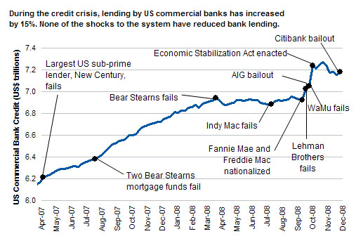

|
|
Construindo a ditadura americana Olavo de Carvalho Não há “crise de crédito” nem recessão nenhuma, mas os gastos do governo americano para remediar problemas inexistentes podem criar um problema real: a hiperinflação. Os EUA ameaçam menos repetir a sua crise de 1929 do que o destino da República de Weimar em 1922, quando era preciso uma cesta de dinheiro para comprar um pãozinho. Estas são as conclusões de um relatório publicado pela firma de consultoria Celent. O autor do estudo, Octavio Marenzi, é freqüentemente citado como fonte pelo Economist, pelo Financial Times e pelo Wall Street Journal. Antes de fundar a Celent, ele foi chefe do departamento de Tecnologia da Informação do Union Bank de Zurique e consultor do Booz, Allen & Hamilton's Financial Services Group na Europa e nos EUA. Ele afirma que os diagnósticos apresentados ao público pelo secretário do Tesouro, Henry Paulson, e pelo presidente do Federal Reserve, Ben Bernanke, são integralmente desmentidos pelas estatísticas oficiais dos órgãos que eles mesmos dirigem. Em setembro, quando persuadiu o presidente Bush a liberar 700 bilhões de dólares em verbas de emergência, Paulson disse que o sistema financeiro estava “paralisado”, que os mercados de crédito haviam “congelado” e que os empréstimos entre bancos tinham se “reduzido substancialmente”. Bernanke afirmou que os negócios estavam enfrentando “reduzido acesso ao crédito”. Tudo isso é cem por cento falso. As tabelas da Secretaria do Tesouro e do Federal Reserve mostram que, em vez de diminuir, a oferta de dinheiro aumentou – e aumentou numa velocidade jamais vista antes na história americana: 74 por cento em apenas 84 dias (15 por cento só no auge da “crise”). “Antes, observa Marenzi, esse salto aconteceria no curso de uma década ou mais.” “Sem dúvida – prossegue –, um certo número de importantes instituições financeiras e de firmas industriais está em sérias dificuldades. No entanto, dificuldades de crédito que afetem um conjunto específico de firmas não é a mesma coisa que um problema no mercado de crédito como conjunto.” No geral, afirma Marenzi, este último estava funcionando muito bem. Se algum risco havia era o da hiperinflação – e a maciça injeção de dinheiro do governo só pode transformar esse risco numa realidade iminente. O relatório está em http://www.celent.com/PressReleases/20081210/WhatCreditCrisis.asp. A conclusão de Marenzi é que Paulson e Bernanke deformaram os fatos “para justificar um acréscimo sem precedentes da intervenção governamental nos mercados”. Mas os dois não fizeram isso sozinhos: a grande mídia inteira os ajudou, endossando suas palavras e abstendo-se meticulosamente de conferi-los com os dados publicados pelas instituições que eles chefiam. Foi justamente por ver que os jornalistas não cumpriam sua função que a Celent decidiu cumpri-la em lugar deles.  No entanto, é claro que os riscos não se limitam à hiperinflação. O anúncio espalhafatoso de uma crise inexistente deslancha, por si mesmo, uma crise real. O gráfico mostra claramente que a oferta de crédito caiu significativamente depois da Lei de Estabilização Econômica assinada em 3 de outubro (Emergency Economic Stabilization Act). Mas, se o remédio foi tão manifestamente culpado por reduzir ao estado de coma um paciente que estava são, não se pode dizer que esse fenômeno não teve precedentes na história da economia americana. Num discurso pronunciado em 8 de novembro de 2002 na Universidade de Chicago, o próprio Bernanke confessou que a Grande Depressão de 1929-1933 não foi causada pela ação espontânea dos fatores econômicos, mas pelo intervencionismo nefasto do Federal Reserve. O discurso foi feito na cerimônia de homenagem ao nonagésimo aniversário de Milton Friedmann – o economista que ao longo de décadas, contra tudo e contra todos, vinha responsabilizando o Federal Reserve pela crise de 1929. Agora era um dos diretores do próprio Federal Reserve que confessava publicamente as culpas da instituição. Mas nem sempre a confissão é um ato sincero de repúdio ao crime. Pode haver nela uma ponta de orgulho secreto, que prenuncia a reincidência. Decorridos seis anos, com Bernanke na presidência, o Federal Reserve está de novo criando uma crise do nada, e, como diz Marenzi, novamente “para justificar um acréscimo de intervenção governamental nos mercados”. Mas, se é assim – e, depois de olhar a tabela anexa, não imagino como possa ter sido outra coisa –, então resta a pergunta: foi George W. Bush quem mandou Paulson e Bernanke fazerem isso? Por que um presidente que está nos últimos dias do mandato buscaria aumentar dessa maneira o poder do Executivo, se ele mesmo não poderá desfrutar dos novos instrumentos de comando? Obviamente, Bernanke e Paulson não estão entregando esses instrumentos nas mãos de George W. Bush, mas de Barack Hussein Obama. Trata-se de fazer com que o próximo presidente já assuma o cargo na condição de ditador financeiro. Se a operação foi realizada na base do engodo e da ocultação premeditada de informações, não há nisso nada de estranho, de vez que a própria vitória eleitoral de Obama foi alcançada pelos mesmos meios: não há a menor dúvida de que, se a mídia armasse em torno do sumiço dos documentos de Obama um centésimo do escarcéu que fez quanto à gravidez da filha de Sarah Palin ou das multas de trânsito de Joe the Plumber, o candidato democrata não teria tantos votos. O eleitorado foi totalmente ludibriado quanto à identidade do homem em quem votava, substituída pelo símbolo “candidato negro”, como se tudo quanto os votantes precisavam saber do futuro presidente fosse a cor da sua pele – e qualquer curiosidade quanto aos capítulos incertos da sua biografia fosse crime de racismo: duas premissas que a mídia inteira adotou como cláusulas pétreas do seu manual de redação durante as eleições. Se duas gigantescas operações de desinformação são empreendidas simultaneamente, uma para forçar o povo a escolher um candidato sem fazer perguntas, outra para ajudar esse candidato a subir ao cargo já com poderes incalculavelmente aumentados, só um idiota completo poderia supor que essas duas operações foram totalmente independentes, só unidas pela mera coincidência de um sincronismo junguiano ou de uma imponderável decisão divina. Em compensação, é verdadeira a articulação das duas manobras com uma terceira, uma quarta e uma quinta, todas convergentemente destinadas a munir de poderes especiais o próximo presidente. 1) A mais óbvia de todas é invenção pessoal de Barack Hussein Obama: a menina-dos-olhos do presidente-eleito é o seu projeto de uma “força civil de segurança nacional”, militância estudantil armada, paga com o dinheiro dos contribuintes para atemorizá-los e persegui-los ao menor chamado do profeta ungido (v. http://www.ibdeditorials.com/IBDArticles.aspx?id=305420655186700). 2) Enquanto o diretor do Fundo Monetário Internacional, Dominique Strauss-Khan, advertia que as restrições de crédito para pessoas de baixa renda podem provocar distúrbios sociais, o próprio Paulson informava que o governo está preparado para enfrentar com a lei marcial as eventuais agitações e protestos que a “crise” venha a suscitar. Lei marcial significa suspensão dos direitos e garantias individuais. 3) Discretamente, alguns expoentes do pensamento militar americano preparam-se para jogar no lixo a lei Posse Comitatus, que desde 1878 proíbe o uso das Forças Armadas como instrumento de repressão interna. Um relatório do Instituto de Estudos Estratégicos do U.S. Army War College afirma explicitamente: “O Departamento de Defesa pode ser forçado a conter e reverter ameaças violentas à tranqüilidade interna. Sob as mais extremas circunstâncias, isso pode incluir o uso da força militar contra grupos hostis dentro dos EUA.” (V. http://www.newsmax.com/headlines/military_domestic_use/2008/12/23/164765.html?s=al&promo_code=763E-1). Alguns conservadores, num lance de humor negro, chamam isso de Posse Obamitatus. Aqueles seres superiores que adquirem suas certezas da contemplação diária de um aparelho de TV devem sentir-se livres, sem nenhum ressentimento da minha parte, para desprezar a convergência lógica desses fatos como pura “teoria da conspiração”. Mas não impedirão que, ao 61 anos de idade, eu já tenha compreendido que a obsessão de parecer normal, equilibrado e mainstream é um sintoma de insegurança muito mal disfarçado.
|

|

Home
- Informações - Textos
- Links
- E-mail